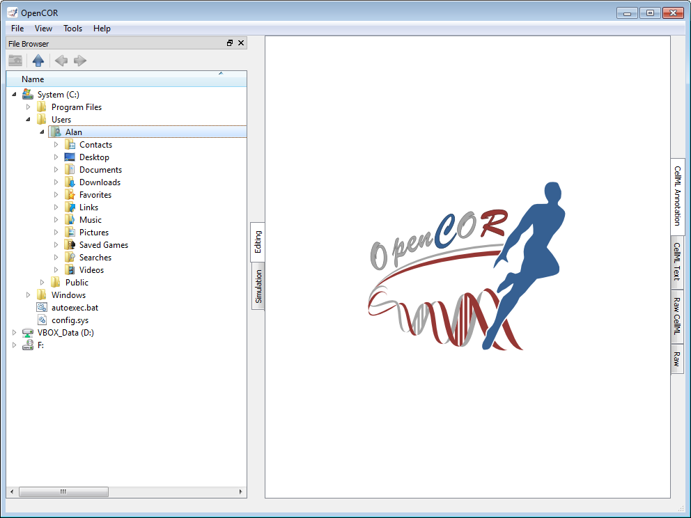
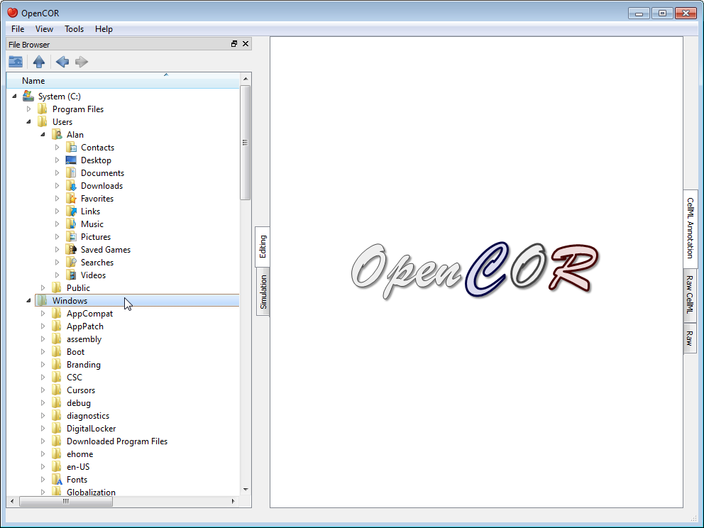
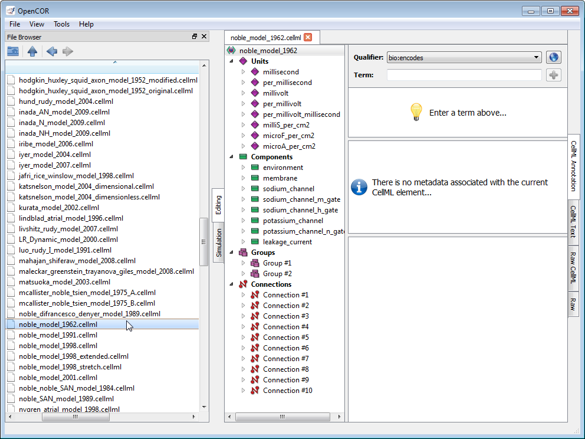

The FileBrowserWindow plugin offers a convenient way to access your physical files, remembering the folder or file that was selected when you last ran OpenCOR. By default, it will select your home directory:

As you would expect, to double click on a folder will expand its contents, as can be seen by double clicking on the Windows directory:

On the other hand, to double click on a file will result in it being opened in OpenCOR. The rendering of the file will depend on the current view being selected. In the case of the CellML Annotation view, it will look something like this:

Files can also be dragged from the File Browser window and dropped onto the File Organiser window.
|
|
Go to the home folder |
|---|---|
|
|
Go to the parent folder |
|
|
Go to the previous folder or file |
|
|
Go to the next folder or file |